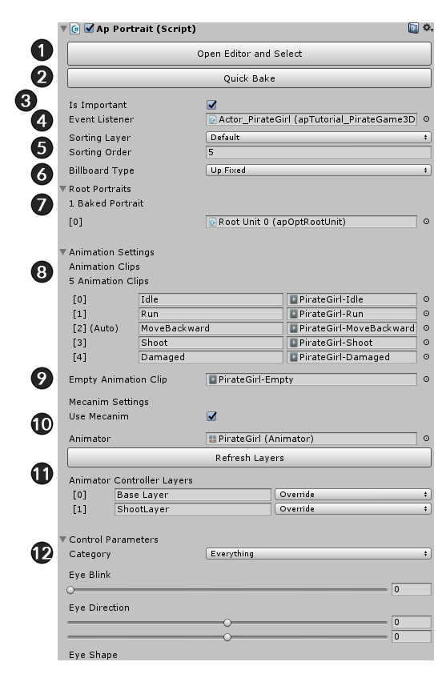

AnyPortrait > Manual > Inspector UI
Inspector UI
1.2.5

When you select the apPortrait object created by AnyPortrait in Unity Editor, the information appears in the Inspector.
This page describes the configuration of the Inspector.
1. Open Editor and Select : Opens the editor and allows you to edit the current object immediately. (If it is Optimized Bake, you can open the editor but you can not edit it.)
2. Quick Bake : Bake right away.
3. Is Important : When this setting is on, it will be updated at every frame of the game. Conversely, when off, it is updated by a lower FPS. The FPS you want to run can be changed in the settings dialog or the Bake dialog box.
4. Event Listener : Specify Monobehaviour to receive animation events.
5. Sorting Layer/Order : Change the output order.
6. Billboard Type : Changes the billboard setting.
7. Root Portraits : The root units are displayed.
8. Animation Clips : Animations appear. If you use Mecanim, corresponding Animation Clip assets are displayed together.
9. Empty Animation Clip : Animation Clip asset corresponding to "Empty State" when using mecanim.
10. Mecanim Settings : Whether to use mecanim or Animator.
11. Animator Layer, Refresh : When using Mecanim, layers of Animator appear. It is not updated until you click the Refresh Layers button.
12. Control Parameters : These are the control parameters that you can check by moving the slider right away. You can test it even when the game is not running
